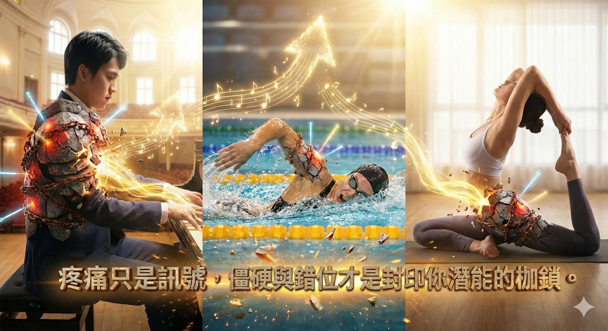

想要表現「更上一層樓」？關鍵不在練更兇，而是要修復長久內傷！
【 想要表現「更上一層樓」？關鍵不在練更兇，而是要修復長久內傷！ 】
最近診間不約而同回診了幾位 #肩膀疼痛 的患者，一位明顯為 #肩夾擠 症候群，另一位則是疑似 #胸廓出口症候群 (TOS)，還有一位是專業的 #瑜伽 老師。
有趣的是，他們原本都是帶著「痛」來看診，但在經過幾次徒手治療與肌筋膜乾針治療後，他們回饋的重點不再只是「不痛了」，而是驚人的：「醫師，我的表現升級了！」
這讓我們看見一個常被忽略的運動科學真相：『疼痛只是訊號，僵硬與錯位才是封印你潛能的枷鎖！』
--
🎹 鋼琴演奏者的體悟：難度越高，肩膀要越鬆
其中一位患者是資深的鋼琴演奏者。在治療左肩的夾擠疼痛後，他回家彈琴時發現了一件不可思議的事。
他興奮地分享：「醫師，原本那些我很卡、彈不好的高難度旋律，回家竟然輕輕鬆鬆就彈出來了！玩鋼琴的都知道，彈奏的難度越難，肩膀就要越放鬆，才能應付那些快速複雜的指法。這次治療後，我的彈奏等級直接跳了兩級 (Level up)！」
--
💡 科學解密：近端穩定，遠端活動
為什麼肩膀鬆，手指才會快？
這符合生物力學中 「近端穩定，遠端活動 (Proximal Stability for Distal Mobility)」的原則。
肩膀（近端）就像是砲台的底座，手指（遠端）是砲管。
- 好的狀態：肩膀肌肉是「鬆而不垮」的動態穩定，神經傳導與肌腱滑動才能毫無阻礙。
- 壞的狀態：當肩膀因為代償而死命繃緊時，就像開車時同時踩煞車。大腦發出的神經訊號在肩膀就被「雜訊（張力）」干擾了，傳到手指自然變得遲鈍、卡頓。
--
🏊♀️ 游泳愛好者的困擾：手麻與卡頓的消失
另一位游泳愛好者的問題更棘手。她游泳划水時，左肩外展上抬非常卡，且肩膀在水平外展上抬的時候引發前三指（拇指、食指、中指）會發麻。
這是一個典型的神經壓迫訊號（疑似胸廓出口症候群 TOS，斜角肌壓迫臂神經叢）。當我們透過乾針與徒手技巧鬆解了鎖死的斜角肌與胸小肌，將肩胛骨復位，打開神經通道後，她這週複診回饋說：
「左邊肩膀變得超級『溜』！划水完全沒有阻力，順暢到不可思議。」
--
🧘♀️ 瑜伽老師的驚喜：骨盆一正，高難度動作秒解鎖
除了肩膀，結構的「歸位」對核心表現同樣關鍵。
有一位瑜伽老師，長期受困於某些高難度體式（Asana）始終做不到位，感覺髖部就是「卡卡的」。經檢查發現，她的問題源自於骨盆旋轉與薦髂關節 (SI Joint) 的失能。
在透過中醫徒手治療精準將骨盆復位調整後，她驚訝地回饋：「醫師，真的太神奇了！那些原本我很掙扎、一直做不到的高難度動作，回家試了一下，居然輕輕鬆鬆就駕馭了，身體的流動感完全不同！」
這證明了：「結構決定功能」。當骨盆這個「人體地基」回到正位，地基穩了，肢體的延展與平衡自然水到渠成。
--
⚖️ 奇怪的副作用？為什麼沒治的那邊變緊了？
有趣的是，這幾位患者都不約而同提到一個現象：「醫師，治好這邊後，我突然覺得 『另一邊怎麼那麼緊』？以前都沒感覺！」
這不是被傳染，而是大腦的 「感官對比 (Sensory Contrast)」。
- 治療前：患側雜訊太強（90 分痛感），大腦忽略了另一側的緊繃。
- 治療後：患側被「系統重置」歸零後，大腦頻寬釋放，才終於注意到：「哎唷？原來另一邊其實也不及格！」
這反而是好現象，代表身體的感知能力（Body Awareness）恢復了敏銳度。
--
🛠 治療關鍵： #肌筋膜乾針 與 #中醫徒手 的「系統重置」
面對這種影響運動表現的「功能性鎖死」，單純的表層按摩是不夠的。我們使用的是 「軟硬兼施」的雙重解鎖策略：
1. 乾針精準解鎖（軟體重置）：
直接針對過度活化（Overactive）的肌肉激痛點進行針刺，誘發 局部抽搐反應 (LTR)，強制肌肉「關機重啟」，解除神經血管束的壓迫，消除手麻。
2. 徒手張力平衡（硬體導航）：
結打開了，但張力仍處在失衡的狀態、骨頭也可能還卡在錯的位置。我們透過輕柔的徒手技術與關節鬆動術 (Joint Mobilization)，將因為長期緊繃而「前傾」或「下沉」的肩胛骨與鎖骨放回正位，重新獲得筋膜張力平衡。
這就像是幫關節「開拓空間」，確保動作鍊（Kinetic Chain）傳導時不再卡頓。
--
👨⚕️ 醫師給你的建議
不管你是運動員、演奏家還是瑜伽行者，請記住：「緊繃與錯位是控制的敵人」。
1. 檢視你的「放鬆力」：最頂尖的高手，不是看他用力多強，是看他能在瞬間「多放鬆」。
2. 別忽視「卡頓感」：無論是手指微麻還是髖部卡卡，那不是瓶頸，那是身體結構在求救。
3. 單邊治療後的落差：如果治療完覺得另一邊變緊，別擔心，請找時間把另一邊也修好，讓身體達到真正的平衡。
想讓表現連跳兩級嗎？或許你欠缺的不是練習，而是一次徹底的身體「解鎖」。
#肩夾擠 #胸廓出口症候群 #TOS #乾針 #運動表現 #鋼琴 #游泳 #手麻 #近端穩定 #中醫針傷 #中醫徒手
太初中醫診所 東門中醫
中醫師 黃彥鈞
---
🔎 參考文獻 (References)：
1. Dommerholt J. (2011). Dry needling - peripheral and central nociceptive sensitization. Acupuncture in Medicine. (說明乾針如何降低周邊與中樞的神經致敏化，改善動作控制)
2. Pascarelli EF, Hsu YP. (2001). Understanding work-related upper extremity disorders: clinical findings in 485 computer users, musicians, and others. Journal of Occupational Rehabilitation. (探討精細動作工作者與音樂家，肩頸張力對手部功能的影響)
3. Kibler WB, et al. (2006). The role of core stability in athletic function. Sports Medicine. (闡述近端穩定對遠端肢體活動的重要性)
本文案例僅供健康衛教參考，胸廓出口症候群與肩部疼痛成因複雜，若有持續手麻、無力或疼痛，請務必尋求專業醫療人員進行鑑別診斷與治療。
